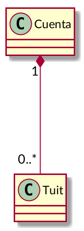
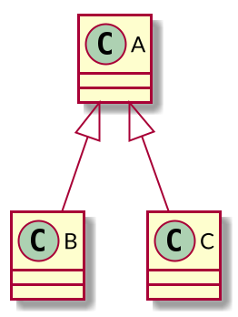

Relaciones entre clases Python
Ricardo Pérez López
IES Doñana, curso 2020/2021
1 Relaciones básicas
1.1 Introducción
Los objetos de un programa interactúan entre sí durante la ejecución del mismo, por lo que decimos que los objetos se relacionan entre sí.
Las relaciones entre objetos pueden ser de varios tipos.
Por ejemplo, cuando un objeto envía un mensaje a otro, tenemos un ejemplo de relación del tipo usa (el primer objeto «usa» al segundo).
Otras veces, los objetos contienen a otros objetos, o bien forman parte de otros objetos.
Finalmente, a veces las relaciones entre los objetos son meramente conceptuales:
- Son relaciones que no se reflejan directamente en el código fuente del programa, sino que aparecen durante el análisis del problema a resolver o como parte del diseño de la solución, en las etapas de análisis y diseño del sistema.
A la relación específica que se da entre dos objetos concretos se denomina enlace.
Cuando una o varias instancias de una clase está relacionada con una o varias instancias de otra clase, también podemos decir que ambas clases están relacionadas.
Una relación entre clases representa un conjunto de posibles relaciones entre instancias de esas clases (un conjunto de enlaces).
Las relaciones entre clases se pueden representar gráficamente en los llamados diagramas de clases.
Esos diagramas se construyen usando un lenguaje de modelado visual llamado UML, que se estudia con detalle en el módulo Entornos de desarrollo.
Entre otras cosas, el lenguaje UML describe los distintos tipos de relaciones entre clases que se pueden dar en un sistema orientado a objetos y cómo se representan y se identifican gráficamente.
La multiplicidad de una clase en una relación representa la cantidad de instancias de esa clase que se pueden relacionar con una instancia de la otra clase en esa relación.
El lenguaje UML también describe la sintaxis y la semántica de las posibles multiplicidades que se pueden dar en una relación entre clases.
Esas multiplicidades también aparecen en los diagramas de clases.
Ejemplos de sintaxis:
n: exactamente n instancias (siendo n un número entero).
*: cualquier número de instancias.
n..m: de n a m instancias.
n..*: de n instancias en adelante.
En el módulo de Programación sólo trabajaremos con las relaciones que se reflejen en el código fuente del programa y que, por tanto, formen parte del mismo.
Por tanto, las relaciones conceptuales que se puedan establecer a nivel semántico durante el análisis o el diseño del sistema no se verán aquí y sólo se trabajarán en Entornos de desarrollo.
En ese módulo también se estudia que los diagramas de clases son una forma de modelar la estructura y el funcionamiento de un sistema.
Está relacionado también con el modelo de datos que se construye en el módulo de Bases de datos.
Todos estos artefactos (código fuente, diagrama de clases y modelo de datos) representan puntos de vista distintos pero complementarios del mismo sistema.
1.2 Asociación
Una asociación simple es una relación genérica que se establece entre dos clases.
Se utiliza cuando se quiere representar el hecho de que las dos clases están relacionadas de alguna manera distinta a la de otros tipos de relaciones más específicas (dependencia, agregación, composición, generalización, etc.).
Tiene más interés en el módulo de Entornos de desarrollo, ya que se usa principalmente durante el análisis y diseño preliminar del sistema.
En Programación tiene menos utilidad y casi siempre se puede sustituir por otro tipo de relación más específica.
Las asociaciones suelen llevar nombre, ya que representan una relación conceptual y hay que aclarar cuál es (normalmente es un nombre asociado al dominio del problema).
En ese sentido, se parecen mucho a las relaciones del modelo Entidad-Relación que se estudia en Bases de datos.
Por ejemplo, si estamos construyendo una aplicación que simule una calculadora, podríamos tener las clases
CalculadorayNumero.En ese caso, podríamos decir que se establece una asociación entre las clases
CalculadorayNumero: la calculadora manipula números.Dicha asociación se puede representar así en un diagrama de clases, usando el lenguaje UML:

La asociación se llama manipula y representa una relación que se da conceptualmente en el modelo que estamos haciendo de nuestra aplicación.
No hay más pistas sobre qué quiere decir manipular números.
Puede ser útil durante el análisis pero no nos ayuda mucho en Programación.
1.3 Dependencia
Una dependencia es un tipo de relación que representa el hecho de que una clase depende de otra por algún motivo.
Ese motivo se indica en la misma dependencia usando un estereotipo.
Un estereotipo es una etiqueta entre comillas («») que acompaña a la relación y que indica de qué tipo es, o bien aporta más información.
En Programación se puede usar, entre otras cosas, para representar el hecho de que una clase «usa» a la otra de alguna forma.
Por ejemplo, cuando un método de una clase necesita acceder a una instancia de otra clase.
En ese caso, esa instancia la puede recibir como argumento, o bien puede crearla y destruirla el propio método.
También cuando una clase llama a un método de la otra clase.
Siguiendo con el ejemplo anterior de la calculadora, si partimos del siguiente código:
Aquí ya tenemos claro que se establece una dependencia entre las clases
CalculadorayNumero: la claseCalculadora«usa» a la claseNumero.
Esa dependencia se representa gráficamente así:

En lugar del estereotipo «usa», también podríamos haber usado el estereotipo «llama», que representa el hecho de que la clase origen llama a algún método de la clase destino.

1.4 Agregación
La agregación es una relación que se establece entre una clase (la agregadora) y otra clase (la agregada).
Representa la relación «tiene»: la agregadora tiene a la agregada.
Podríamos decir que la clase agregada forma parte de la agregadora, pero de una forma débil, ya que los objetos de la clase agregadora y de la clase agregada tienen su existencia propia, independiente unos de otros.
Para ello, los objetos de la clase agregadora almacenan referencias a los objetos agregados.
Por tanto:
La clase agregada puede formar parte de varias clases agregadoras.
Según sea el caso, un objeto de la clase agregada puede existir aunque no forme parte de ningún objeto de la clase agregadora.
La clase agregadora no tiene por qué ser la responsable de crear el objeto agregado.
Cuando se destruye un objeto de la clase agregadora, no es necesario destruir los objetos de la clase agregada.
- Por ejemplo:
Los grupos tienen alumnos. Un alumno puede pertenecer a varios grupos, y un alumno existe por sí mismo aunque no pertenezca a ningún grupo.
La clase
Grupo«agrega» a la claseAlumnoy contiene referencias a los alumnos del grupo.

class Grupo:
def __init__(self):
self.__alumnos = [] # Guarda una lista de referencias a Alumnos
def get_alumnos(self):
return self.__alumnos
def meter_alumno(self, alumno):
self.__alumnos.append(alumno)
def sacar_alumno(self, alumno):
try:
self.__alumnos.remove(alumno)
except ValueError:
raise ValueError("El alumno no está en el grupo")
daw1 = Grupo() # Los objetos los crea...
pepe = Alumno() # ... el programa principal, así que ...
juan = Alumno() # ... ningún objeto crea a otro.
daw1.meter_alumno(pepe) # Metemos en __alumnos una referencia a pepe
daw1.meter_alumno(juan) # Metemos en __alumnos una referencia a juan
daw1.sacar_alumno(pepe) # Eliminamos de __alumnos la referencia a pepe
daw2 = Grupo() # Se crea otro grupo
daw2.meter_alumno(juan) # juan está en daw1 y daw2 al mismo tiempo1.5 Composición
La composición es una relación que se establece entre una clase (la clase compuesta) y otra clase (la clase componente).
Representa la relación «está compuesto por»: la compuesta está compuesta por sus componentes.
También se puede decir que la clase componente forma parte de la clase compuesta, pero de una forma fuerte, ya que los objetos componentes sólo pueden existir como parte de un objeto compuesto.
Para ello, los objetos de la clase compuesta almacenan referencias de los objetos compuestos, pero de manera que esas referencias no se pueden compartir entre varios objetos compuestos.
Por tanto:
Un objeto componente sólo puede formar parte de un único objeto compuesto.
Un objeto de la clase componente sólo puede existir como parte de un objeto compuesto.
La clase compuesta es responsable de crear y almacenar todos sus objetos componentes.
Cuando se destruye un objeto compuesto, se deben destruir todos sus objetos componentes.
- Por ejemplo:
En Twitter, una cuenta tiene una serie de tuits. Cada tuit debe pertenecer a una cuenta, pero no pueden pertenecer a más de una cuenta al mismo tiempo. Cuando se elimina una cuenta, se eliminan todos sus tuits.
Junto al rombo relleno siempre habrá una multiplicidad de “1”, ya que un componente sólo puede formar parte de un objeto compuesto.

class Tuit:
def __init__(self, texto):
self.__texto = texto
self.__ident = id(self)
def get_ident(self):
return self.__ident
class Cuenta:
def __init__(self):
self.__tuits = [] # Guarda una lista de referencias a Tuits
def get_tuits(self):
return self.__tuits[:]
def crear_tuit(self, texto):
t = Tuit(texto) # El tuit se crea dentro de la cuenta
self.__alumnos.append(t) # La cuenta almacena el tuit
def eliminar_tuit(self, ident):
for t in self.__tuits:
if t.get_ident() == ident:
self.__alumnos.remove(t)
raise ValueError("No existe ningún tuit con ese id")
c1 = Cuenta()
c1.crear_tuit("Este módulo es muy bonito")
c1.crear_tuit("Me encanta DAW")
c2 = Cuenta()
c2.crear_tuit("Odio Programación")Resumen:
Agregación Composición Una parte puede pertenecer a… Varios todos Un todo únicamente Una parte puede existir aunque no pertenezca a un todo. Sí No El todo es responsable de crear la parte. No Sí El todo es responsable de almacenar la parte. No Sí Cuando se destruye el todo, se debe destruir la parte. No Sí Multiplicidad en el todo. Cualquiera 1
2 Herencia
2.1 Generalización
La relación de generalización es un tipo de relación que se da entre una clase (la superclase o clase base) y otra clase (la subclase o clase derivada).
Representa la relación «es un(a)»: una instancia de la subclase también es una instancia de la superclase.
También se puede decir que:
La subclase es una forma más especializada de la superclase.
La superclase es una forma más general de la subclase.
La práctica totalidad de los lenguajes orientados a objetos permiten definir subclases a partir de otras clases, creando lo que se denominan jerarquías de generalización.
Por ejemplo:
- En un Instituto hay dos tipos de trabajadores: docentes y PAS (personal de administración y servicios).
Ambos comparten características comunes pero también tienen otras que los diferencian.
Todo docente «es un» trabajador, y todo PAS también «es un» trabajador.
Pero no podemos decir que todo trabajador es un docente, ya que podría ser un PAS.
Por tanto, podemos decir que tanto
DocentecomoPASson subclases deTrabajador.

Se puede usar la generalización para:
Cambiar o ampliar las características de una clase creando a partir de ella otra más especializada (una subclase de la original).
Combinar las características de varias clases en una clase más general que agrupe los elementos comunes a todas ellas (una superclase de las originales).
2.2 Herencia
A través de la relación de generalización, las subclases adquieren (heredan) las características de la superclase.
A ese mecanismo se le denomina herencia.
Son dos conceptos distintos pero interconectados:
La generalización es la relación por la cual una clase se convierte en subclase de otra.
La herencia es el mecanismo por el que una subclase adquiere características de la superclase.
La herencia puede considerarse como un mecanismo de reutilización de código entre la superclase y la subclase, evitando repeticiones innecesarias.
2.3 Modos
Existen dos modos de generalización, en función de la cantidad de superclases que se le permite tener a una subclase dada:
Generalización simple: también llamada herencia simple, es cuando una subclase sólo puede tener una superclase.
Generalización múltiple: también llamada herencia múltiple, es cuando una subclase puede tener varias superclases (no sólo una).
Hay lenguajes que sólo admiten herencia simple y lenguajes que admiten herencia múltiple.
En concreto:
Python soporta la herencia múltiple.
Java sólo soporta la herencia simple.
2.3.1 Herencia simple
En la herencia simple, una clase sólo puede subclase de una única superclase.
Una clase siempre puede ser superclase de muchas clases, pero en la herencia simple sólo puede ser subclase de una única superclase.
- Por ejemplo, el caso de un docente que también es un trabajador, de forma que la clase
Docentesólo es subclase deTrabajador.

- El siguiente caso también sería herencia simple, ya que tenemos dos relaciones de generalización separadas, pero ninguna subclase tiene más de una superclase:

- Por tanto, lo que tenemos son dos herencias simples, no una herencia múltiple.
- Ésto, en cambio, no sería herencia simple, sino múltiple:

Las relaciones de generalización pueden formar una cadena tan larga como sea necesaria.
Por ejemplo, aquí tenemos dos relaciones de generalización simple:

Trabajadores superclase directa deDocentey superclase indirecta deInvestigador.Docentees subclase (directa) deTrabajadory superclase (directa) deInvestigador.Investigadores subclase directa deDocentey subclase indirecta deTrabajador.
- La forma de codificar la herencia simple en Python es especificar el nombre de la superclase detrás del nombre de la subclase, entre paréntesis:
- Lo interesante del mecanismo de la herencia es que la subclase adquiere las características de la superclase, por lo que la clase
Docentetambién dispone de los métodosset_nombre()yget_nombre()heredados deTrabajador:
- Es como si el código de los métodos
set_nombre()yget_nombre()se hubiesen «copiado y pegado» dentro de la claseDocente.
En realidad, el mecanismo funciona como una lista enlazada, más o menos como los entornos que hemos estudiado hasta ahora.
Ya hemos visto en la unidad anterior que las definiciones de las clases se representan internamente mediante una estructura tipo diccionario.
Esos diccionarios se conectan entre sí formando una lista enlazada, de forma que el diccionario que contiene la definición de la subclase apunta al diccionario de su superclase directa, siguiendo el camino que trazan las relaciones de generalización.
Esa lista será tan larga como sea necesario, y tendrá tantos diccionarios como clases haya en la cadena de herencia simple.
De esta forma, la herencia va propagando las características de la superclase a todas sus subclases (directas e indirectas).
En nuestro caso, el diccionario de
Docenteapunta al deTrabajador.
Al llamar a un método sobre un objeto, el intérprete busca el método dentro del diccionario que contiene la definición de la clase del objeto:
Si encuentra el método, lo usa.
Si no lo encuentra, sigue subiendo por la lista enlazada localizando el siguiente diccionario (que será el que contenga la definición de su superclase directa), buscando ahí el método solicitado.
El intérprete seguirá buscando en el resto de la lista hasta que encuentre el método o se acabe la cadena de herencia, en cuyo caso dará un error
AttributeErrorpor método no encontrado.
Por eso podemos llamar al método
set_nombre()sobre una instancia de la claseDocenteaunque dicha clase no tenga definido ese método.Por el mecanismo de la herencia, el método lo hereda de su superclase
Trabajador.En tiempo de ejecución, cuando se encuentra una llamada al método
set_nombre(), el intérprete busca el método recorriendo la cadena de herencia representada en la lista de diccionarios:Primero lo busca en la definición de la clase
Docente.Como no lo encuentra, a continuación lo busca en la definición de la clase
Trabajador.Como ahora sí lo ha encontrado, lo ejecuta como si el método hubiese estado definido directamente en la clase
Docente.
Al igual que ocurre con los métodos, las variables de clase también se heredan de una clase a sus subclases:
2.3.2 La clase object
En Python, todas las clases heredan, directa o indirectamente, de una clase predefinida especial llamada
object.Eso es así incluso aunque no aparezca explícitamente la clase
objectcomo superclase en la definición de la clase.Por tanto, la siguiente clase es subclase de
objectaunque no sea evidente según el código:Así que lo anterior es equivalente a:
Eso significa que
objectes la raíz de la jerarquía de clases en todo programa Python.
- En el ejemplo anterior de los trabajadores, docentes e investigadores, en realidad tendríamos la siguiente jerarquía de clases:

Como todas las clases, predefinidas o definidas por el programador, son subclases de
objectya sea directa o indirectamente, todas las clases heredarán los atributos (métodos y variables de clase) de la claseobject.La mayoría son métodos mágicos o variables mágicas (sus nombres empiezan y acaban por
__) que traen implementaciones predeterminadas para varias operaciones básicas como==,!=,<=,<, etc.También hay operaciones utilizadas internamente por el intérprete durante la ejecución del programa para ayudar a su funcionamiento.
2.3.3 Herencia múltiple
En la herencia múltiple, una subclase puede tener varias superclases.
La herencia múltiple amplía enormemente las posibilidades del lenguaje de programación, ya que permite el modelado de situaciones que se pueden dar con frecuencia y que se pueden expresar de forma natural generalizando una clase a partir de varias superclases simultáneamente.
A cambio, introduce una mayor complejidad que la herencia simple a la hora de determinar qué se hereda de dónde.
Esa mayor complejidad hace que no muchos lenguajes orientados a objetos soporten la herencia múltiple, siendo los más conocidos: Python, C++, Perl y Eiffel.
Los lenguajes orientados a objetos que no soportan herencia múltiple (que son la mayoría) incorporan mecanismos que ayudan a mitigar esa carencia.
Por ejemplo, si queremos modelar el mundo animal, tenemos que hay animales terrestres, acuáticos y anfibios, de manera que estos últimos tienen características de los dos primeros.
Por tanto, podríamos modelarlo usando herencia múltiple de la siguiente manera:
Y en Python se escribiría así:
Es decir: en la definición de la subclase indicamos todas las superclases que tenga, entre paréntesis y separadas por comas.
El orden en el que se escriban las superclases tiene importancia, como veremos luego.
Como
Anfibioes subclase deTerrestrey deAcuaticoal mismo tiempo, heredará los métodos de ambas clases simultáneamente.También heredará los métodos definidos en la clase
Animal, por la sencilla razón de queTerrestreyAcuaticotambién los hereda, por lo queAnfibiolos hereda a través de estas dos.Pero a la hora de buscar un método en la cadena de herencia, ya no es tan fácil como crear una simple lista de diccionarios como teníamos antes, ya que ahora no hay un único camino entre dos clases según las relaciones de generalización.
Por ejemplo: para ir de
AnfibioaAnimal, podemos pasar porTerrestreo porAcuatico.Entonces: ¿cómo se decide ahora en qué orden se busca un método entre todas las clases de la jerarquía de herencia?
Este es el llamado problema del orden de resolución de métodos (Method Resolution Order o MRO).
Por si fuera poco, aún tenemos otro problema que con la herencia simple no teníamos, y que es aún más complicado.
Supongamos que tanto la clase
TerrestrecomoAcuaticodisponen de un métodomover(), de forma que todos los animales terrestres se mueven caminando, mientras que los acuáticos lo hacen nadando.Por tanto, ambas clases disponen de una implementación distinta del mismo método
mover().Son métodos que tienen la misma signatura pero que se comportan de distinta forma.
- Tenemos, por tanto, la siguiente situación:

mover() está en Terrestre y AcuaticoLa pregunta es: ¿cuál de los métodos
mover()heredaráAnfibio?¿El de
Terrestre?¿El de
Acuatico?¿Los dos a la vez?
Ahí tenemos una ambigüedad que hay que resolver de alguna manera.
A este problema se le denomina problema del diamante.
El mecanismo para resolver esa ambigüedad depende del lenguaje.
Python implementa un mecanismo basado en un algoritmo llamado linealización C3, que establece un orden de prioridad entre todas las clases a la hora de seleccionar un método de la cadena de herencia.
Es decir: el algoritmo ordena las clases en una lista, de forma que las clases que aparezcan antes en la lista tendrán más prioridad a la hora de seleccionar un método.
De esta forma, si hay métodos repetidos en la cadena de herencia en clases distintas, el algoritmo seleccionará siempre uno de ellos según el orden que haya determinado para las clases.
Así, Python resuelve los dos problemas (el del MRO y el del diamante) al mismo tiempo con un solo algoritmo.
Para ver en detalle cómo funciona la linealización C3, se recomienda consultar su página en Wikipedia:
A nosotros, lo que nos interesa principalmente es que el programador puede influir en el orden de resolución de métodos según el orden en el que escriba las superclases a la hora de definir la subclase.
Por tanto, no es lo mismo hacer:
Que hacer:
Si aplicamos el algoritmo en ambos casos, obtenemos resultados distintos.
En concreto, si aplicamos el algoritmo al siguiente código:
class Animal: # ... definición de la clase Animal class Terrestre(Animal): # ... definición de la clase Terrestre class Acuatico(Animal): # ... definición de la clase Acuatico class Anfibio(Terrestre, Acuatico): # ... definición de la clase Anfibioobtenemos que el orden de resolución de métodos para la clase
Anfibiosería la lista:[Anfibio, Terrestre, Acuatico, Animal, object]
En cambio, si lo aplicamos al siguiente código:
class Animal: # ... definición de la clase Animal class Terrestre(Animal): # ... definición de la clase Terrestre class Acuatico(Animal): # ... definición de la clase Acuatico class Anfibio(Acuatico, Terrestre): # ... definición de la clase Anfibioel orden de resolución de métodos para la clase
Anfibiosería:[Anfibio, Acuatico, Terrestre, Animal, object]
La lista de clases que devuelve el algoritmo es la que el intérprete iría siguiendo desde el principio hasta encontrar el método solicitado.
Es decir: el algoritmo transforma una jerarquía que no es lineal en una lista lineal, por lo que volvemos a tener lo mismo que teníamos en la herencia simple: una lista enlazada de diccionarios que representan clases.
Por eso el algoritmo se llama linealización C3.
2.4 Superclases y subclases
2.5 Utilización de clases heredadas
3 Polimorfismo
3.1 Concepto
El polimorfismo es una de las características básicas de la Programación Orientada a Objetos.
Decimos que los objetos son polimórficos.
La palabra «polimorfismo» significa «muchas formas», y se refiere al hecho de que una referencia:
puede apuntar a un objeto cuya clase no está determinada de antemano y puede cambiar durante la ejecución del programa, y
puede pertenecer a varias clases al mismo tiempo.
- Por tanto, cuando tenemos una referencia almacenada en una variable, esta apunta a un objeto que puede pertenecer a una clase de entre muchas, o incluso puede pertenecer a varias clases al mismo tiempo.
Esto debido a que la generalización establece una relación «es un» entre la subclase y la superclase.
Por ejemplo,
Docentees subclase deTrabajador, por lo que una instancia de la claseDocentetambién se considera una instancia (indirecta) de la claseTrabajador(los docentes «son» trabajadores).Eso significa que un objeto puede pertenecer a varias clases al mismo tiempo, de forma que puede ser instancia directa de una clase y, al mismo tiempo, ser instancia indirecta de otras clases.
En Python existen las funciones
isinstanceyissubclassque nos ayudan a entender las relaciones de generalización entre clases y cuándo un objeto es instancia (directa o indirecta) de una clase.En todo caso, se suelen usar muy poco, ya que el gran poder del polimorfismo es precisamente escribir código que no dependa de la clase concreta a la que pertenezca un objeto.
Por ejemplo:
>>> class A: ... pass ... >>> issubclass(A, object) # 'A' es subclase de 'object' True >>> issubclass(object, A) # 'object' NO es subclase de 'A' False >>> issubclass(A, A) # 'A' es subclase de sí misma True >>> a = A() # Creamos 'a' instanciando 'A' >>> isinstance(a, A) # 'a' es instancia (directa) de 'A' True >>> isinstance(a, object) # 'a' es instancia (indirecta) de 'object' True >>> isinstance(a, int) # 'a' NO es instancia de 'int' False
3.2 Principio de sustitución de Liskov
Sabiendo eso, podemos enunciar el llamado principio de sustitución de Liskov (introducido por Barbara Liskov en 1987) y que dice así:
Principio de sustitución de Liskov
Si S es una subclase de T, entonces las instancias de T pueden ser sustituidas por instancias de S sin alterar el correcto funcionamiento del programa.
O dicho de otra forma: allí donde se espere una instancia de una determinada clase, es posible colocar una instancia de cualquier subclase suya.
Este principio es consecuencia del concepto de generalización entre clases, que ya conocemos.
Por ejemplo, supongamos que tenemos una función (o un método) que recibe dos objetos de la clase
Trabajadory calcula la diferencia entre sus salarios.En Python, podría tener este aspecto:
class Trabajador: def __init__(self, nombre, salario): self.set_nombre(nombre) self.set_salario(salario) def set_nombre(self, nombre): self.__nombre = nombre def get_nombre(self): return self.__nombre def set_salario(self, salario): self.__salario = salario def get_salario(self): return self.__salario def diferencia_salarios(t1, t2): """t1 y t2 son instancias de Trabajador""" return t1.get_salario() - t2.get_salario()
La función
diferencia_salariossupone que sus dos argumentos son instancias de la claseTrabajador, por lo que asume que puede invocar el métodoget_salariosobre cada uno de ellos. De esta forma, obtiene su salario y puede calcular su diferencia:Recordemos que un docente también es un trabajador (es una subclase suya):
Por tanto,
Docentehereda los métodos deTrabajador, incluyendoget_salario.
Así, por el principio de sustitución, podemos enviarle como argumentos a
diferencia_salariosinstancias de la claseDocenteen lugar de instancias de la claseTrabajador:Funciona porque
diferencia_salariosllama al métodoget_salariode los objetos que recibe, los cuales ahora son instancias deDocente, peroDocentehereda los métodos deTrabajadorincluyendoget_salario.Comprobamos que se cumple perfectamente el principio de sustitución.
La gran ventaja es que la función
diferencia_salarioses capaz de calcular la diferencia de salarios de cualquier tipo de trabajador, ya sea un trabajador genérico o un docente, o un investigador… o incluso otro tipo que aún no existe siquiera.Eso es así porque sabemos que todos los trabajadores (sean del tipo que sean) responden al mensaje
get_salario.
En el código de la función
diferencia_salarios:def diferencia_salarios(t1, t2): """t1 y t2 son instancias de Trabajador""" return t1.get_salario() - t2.get_salario()los argumentos
t1yt2son referencias a objetos que pueden adoptar varias formas:Pueden ser trabajadores o pueden ser cualquier tipo específico de trabajador (docente, investigador o cualquier otro que ni siquiera exista aún).
De hecho, pueden ser varias cosas al mismo tiempo:
Pueden ser docentes y trabajadores al mismo tiempo.
O pueden ser investigadores, docentes y trabajadores al mismo tiempo.
Etcétera.
Por eso se dice que
t1yt2son objetos polimórficos.
3.3 Duck typing
En un lenguaje de tipado dinámico como Python, el principio de sustitución y el polimorfismo adoptan un enfoque aún más extremo.
Si volvemos al código de la función
diferencia_salarios:def diferencia_salarios(t1, t2): """t1 y t2 son instancias de Trabajador""" return t1.get_salario() - t2.get_salario()observamos que en ningún momento se exige que
t1yt2sean instancias (directas o indirectas) de la claseTrabajador.En realidad, lo único que necesita la función es que tanto
t1comot2respondan al mensajeget_salariosin recibir ningún argumento y devolviendo un número (para que luego se puedan restar).Por tanto, cualquier objeto de cualquier clase nos valdría siempre que cumpliera la condición anterior; no hace falta que sean trabajadores.
- En los lenguajes dinámicos hay un dicho que afirma:
«Si camina como un pato y habla como un pato, entonces es un pato.»
A esto se le conoce como duck typing, y significa que lo importante no es la clase a la que pertenece un objeto, sino «qué aspecto tiene», es decir, a qué mensajes es capaz de responder y cómo.
Es exactamente lo que ocurre con la función
diferencia_salarios. Nos vale cualquier objeto que responda adecuadamente al mensajeget_salario.El duck typing hace que la programación orientada a objetos resulte mucho más flexible, puesto que lo importante no es la jerarquía de clases que se define, sino cómo se comportan los objetos.
Son más importantes los objetos que las clases.
Por ejemplo, supongamos que queremos calcular el área de una superficie rectangular dados su ancho y su alto, y suponemos que todos los rectángulos disponen de los métodos
get_anchoyget_alto:Cualquier objeto que responda correctamente a esos dos métodos nos valdría como argumento
rectde la funciónarea.Por ejemplo, una ventana o una figura rectangular tienen ancho y alto, y las clases
VentanayRectangulopueden ser clases totalmente independientes, sin relación entre sí:
Y la misma función nos valdría para calcular el área de ventanas, rectángulos y cualquier otra cosa que tenga ancho y alto: